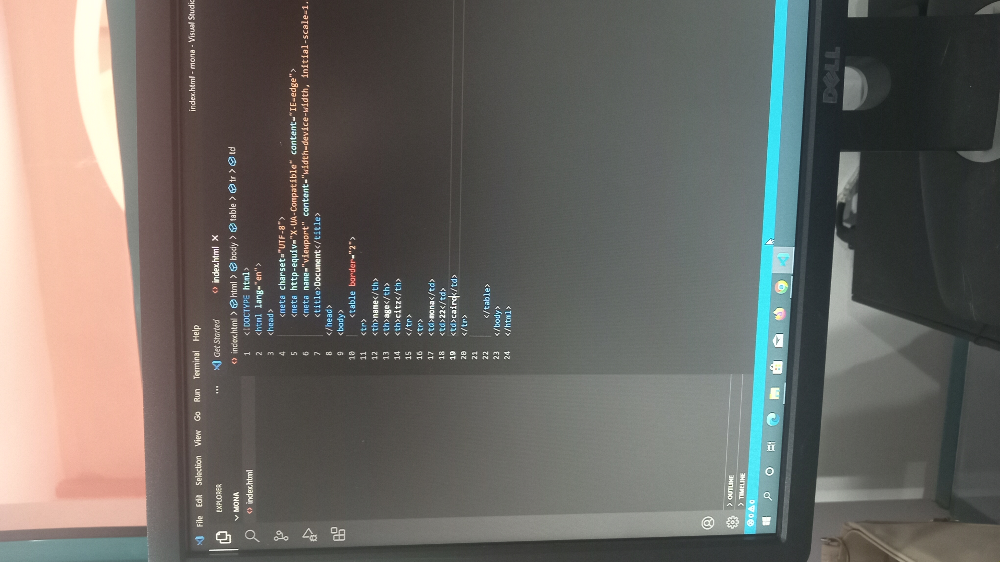

Mona hamdy elezawi
2500221
Css أصبحت المواقع الإلكترونية جزءًا مهمًا من حياتنا اليومية، حيث نستخدمها في التعليم والعمل والتواصل والحصول على المعلومات. ولا يعتمد تصميم المواقع على كتابة النصوص فقط، بل يحتاج أيضًا إلى تنسيق الألوان والخطوط وترتيب العناصر حتى يظهر الموقع بشكل منظم ويسهل استخدامه. . تعتبر من .اللغات المهمة في تصميم صفحات الويب، لأنها تساعد على التحكم في شكل الصفحة وتنسيق محتواها، مما يجعل الموقع أكثر وضوحًا وجاذبية للزائر..
Css CSS هي اختصار لـ Cascading Style Sheets تُستخدم لتنسيق صفحات المواقع الإلكترونية (Css) تعتبر لغة من اللغات المهمة في تصميم المواقع، لأنها مسؤولة عن تنسيق شكل صفحات الويب وتغيير الألوان والخطوط والخلفيات. وهي بتكمل دور (Html) وهيا اللي بتحدد محتوى الصفحة، وبتساعد في جعل الموقع منظمًا وجذابًا يحتاج إلى تنسيق الألوان والخطوط وترتيب العناصر حتى يكون الموقع سهل الاستخدام وجذابًا للزائر. وتصميم صفحات الويب

| property | functions | Example |
|---|---|---|
| color | change text color | color:red |
| background-color | Changes background color | background-color: #f0f0f0; |
| font-size | Changes text size | font-size: 16px; |